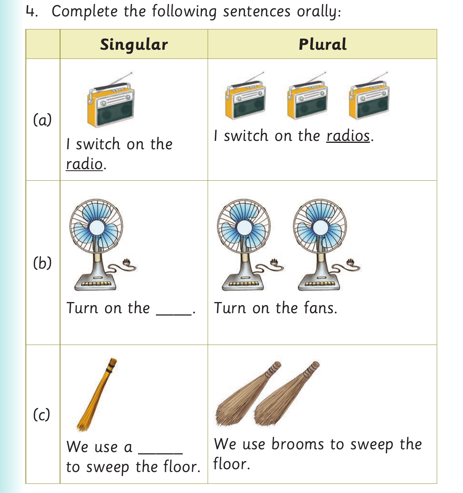

Exact visual panel 1 of 2 from this source page. The page uses visuals as follows: The page shows one cat and three cats, then sentence pictures of one and several radios, fans and brooms.
Singular Plural
(k)
cat

Exact visual panel 2 of 2 from this source page. The page uses visuals as follows: The page shows one cat and three cats, then sentence pictures of one and several radios, fans and brooms.
4. Complete the following sentences orally:
Singular Plural
(a)
I switch on the radios.
I switch on the
radio.
(b)
Turn on the ____. Turn on the fans.
(c)
We use brooms to sweep the
We use a _____
floor.
to sweep the floor.